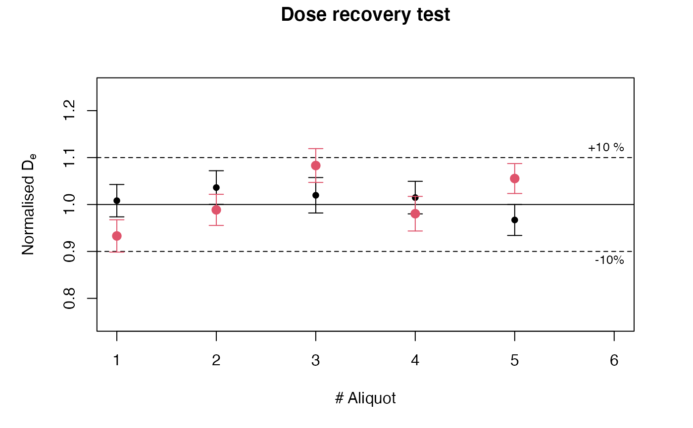
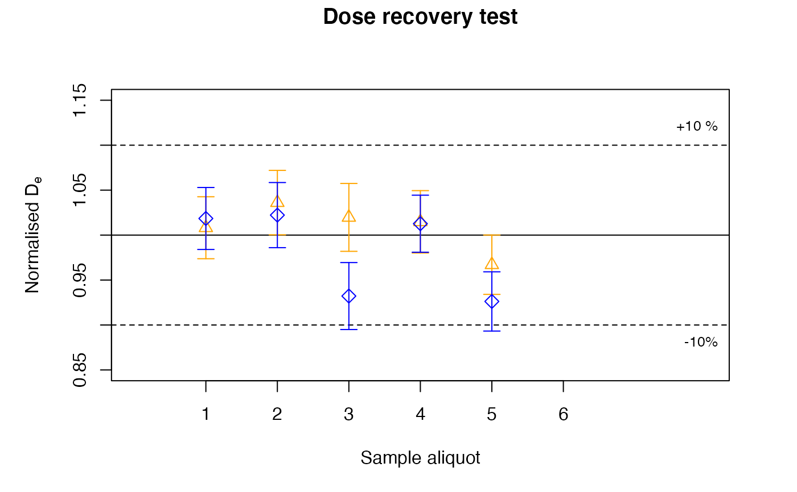
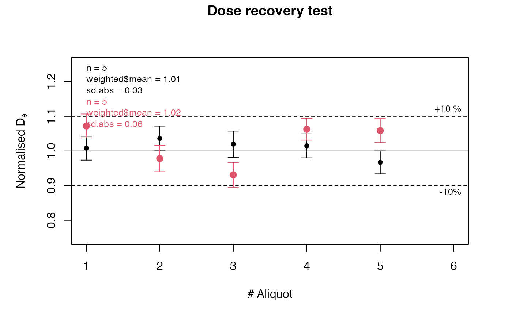
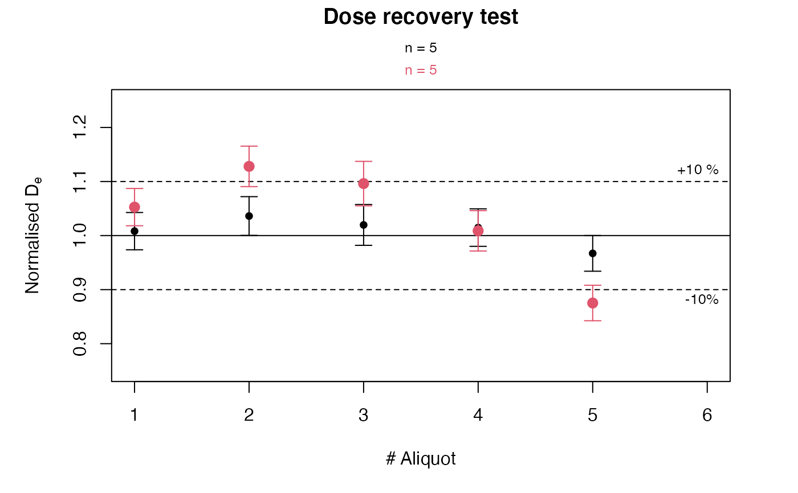
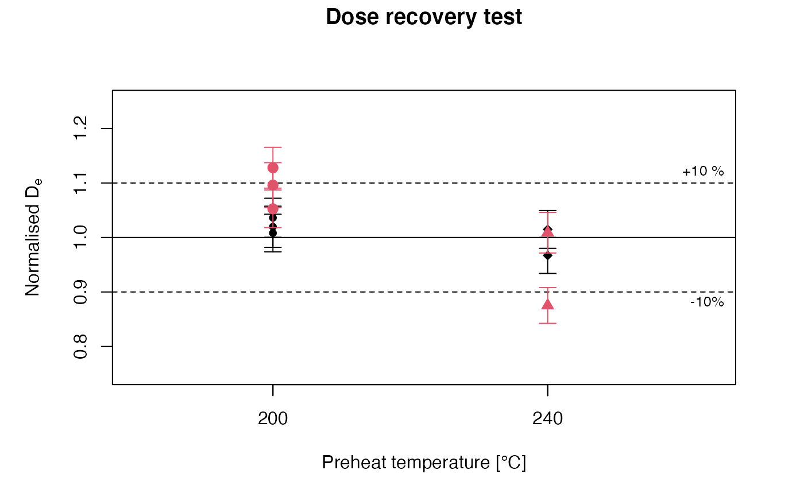
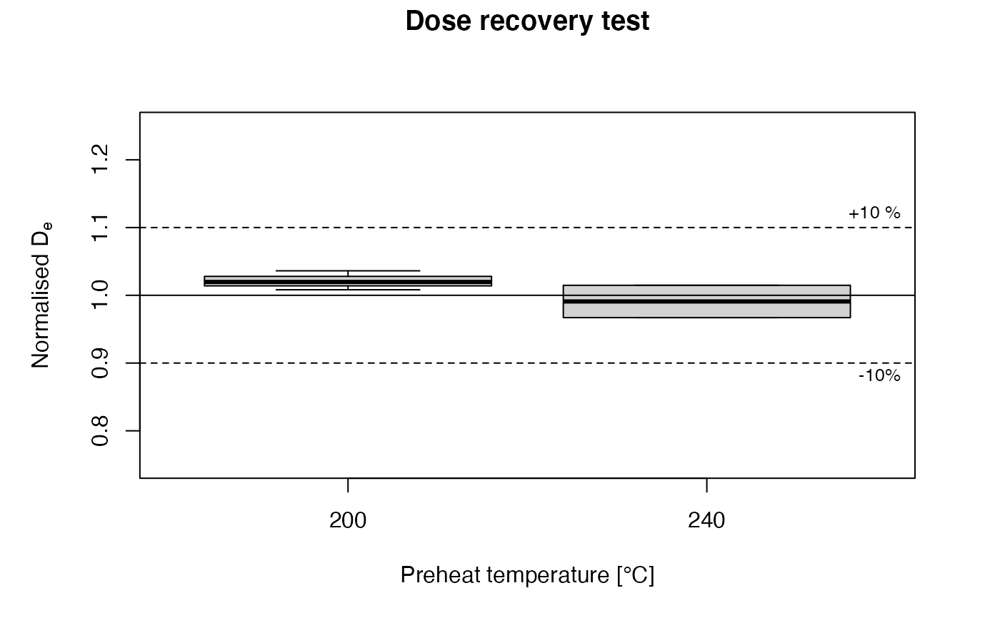

Visualise dose recovery test results
plot_DRTResults.RdThe function provides a standardised plot output for dose recovery test measurements.
plot_DRTResults(values, given.dose = NULL, error.range = 10, preheat, boxplot = FALSE, mtext, summary, summary.pos, legend, legend.pos, par.local = TRUE, na.rm = FALSE, ...)
Arguments
| values | RLum.Results or data.frame (required):
input values containing at least De and De error. To plot
more than one data set in one figure, a |
|---|---|
| given.dose | numeric (optional):
given dose used for the dose recovery test to normalise data.
If only one given dose is provided this given dose is valid for all input
data sets (i.e., |
| error.range | numeric:
symmetric error range in percent will be shown as dashed lines in the plot.
Set |
| preheat | numeric: optional vector of preheat temperatures to be used for grouping the De values. If specified, the temperatures are assigned to the x-axis. |
| boxplot | logical:
optionally plot values, that are grouped by preheat temperature as boxplots.
Only possible when |
| mtext | character: additional text below the plot title. |
| summary | character (optional): adds numerical output to the plot. Can be one or more out of:
and all other measures returned by the function calc_Statistics. |
| summary.pos | numeric or character (with default):
optional position coordinates or keyword (e.g. |
| legend | character vector (optional): legend content to be added to the plot. |
| legend.pos | numeric or character (with default):
optional position coordinates or keyword (e.g. |
| par.local | logical (with default):
use local graphical parameters for plotting, e.g. the plot is shown in one
column and one row. If |
| na.rm | logical: indicating wether |
| ... | further arguments and graphical parameters passed to plot. |
Value
A plot is returned.
Details
Procedure to test the accuracy of a measurement protocol to reliably
determine the dose of a specific sample. Here, the natural signal is erased
and a known laboratory dose administered which is treated as unknown. Then
the De measurement is carried out and the degree of congruence between
administered and recovered dose is a measure of the protocol's accuracy for
this sample.
In the plot the normalised De is shown on the y-axis, i.e. obtained De/Given Dose.
Note
Further data and plot arguments can be added by using the appropriate R commands.
Function version
0.1.12 (2018-02-23 22:32:54)
How to cite
Kreutzer, S., Dietze, M. (2019). plot_DRTResults(): Visualise dose recovery test results. Function version 0.1.12. In: Kreutzer, S., Burow, C., Dietze, M., Fuchs, M.C., Schmidt, C., Fischer, M., Friedrich, J. (2019). Luminescence: Comprehensive Luminescence Dating Data Analysis. R package version 0.9.0.104. https://CRAN.R-project.org/package=Luminescence
References
Wintle, A.G., Murray, A.S., 2006. A review of quartz optically stimulated luminescence characteristics and their relevance in single-aliquot regeneration dating protocols. Radiation Measurements, 41, 369-391.
See also
Examples
## read example data set and misapply them for this plot type data(ExampleData.DeValues, envir = environment()) ## plot values plot_DRTResults(values = ExampleData.DeValues$BT998[7:11,], given.dose = 2800, mtext = "Example data")## plot values with legend plot_DRTResults(values = ExampleData.DeValues$BT998[7:11,], given.dose = 2800, legend = "Test data set")## create and plot two subsets with randomised values x.1 <- ExampleData.DeValues$BT998[7:11,] x.2 <- ExampleData.DeValues$BT998[7:11,] * c(runif(5, 0.9, 1.1), 1) plot_DRTResults(values = list(x.1, x.2), given.dose = 2800)## some more user-defined plot parameters plot_DRTResults(values = list(x.1, x.2), given.dose = 2800, pch = c(2, 5), col = c("orange", "blue"), xlim = c(0, 8), ylim = c(0.85, 1.15), xlab = "Sample aliquot")## plot the data with user-defined statistical measures as legend plot_DRTResults(values = list(x.1, x.2), given.dose = 2800, summary = c("n", "mean.weighted", "sd"))## plot the data with user-defined statistical measures as sub-header plot_DRTResults(values = list(x.1, x.2), given.dose = 2800, summary = c("n", "mean.weighted", "sd"), summary.pos = "sub")## plot the data grouped by preheat temperatures plot_DRTResults(values = ExampleData.DeValues$BT998[7:11,], given.dose = 2800, preheat = c(200, 200, 200, 240, 240))## read example data set and misapply them for this plot type data(ExampleData.DeValues, envir = environment()) ## plot values plot_DRTResults(values = ExampleData.DeValues$BT998[7:11,], given.dose = 2800, mtext = "Example data")## plot two data sets grouped by preheat temperatures plot_DRTResults(values = list(x.1, x.2), given.dose = 2800, preheat = c(200, 200, 200, 240, 240))## plot the data grouped by preheat temperatures as boxplots plot_DRTResults(values = ExampleData.DeValues$BT998[7:11,], given.dose = 2800, preheat = c(200, 200, 200, 240, 240), boxplot = TRUE)